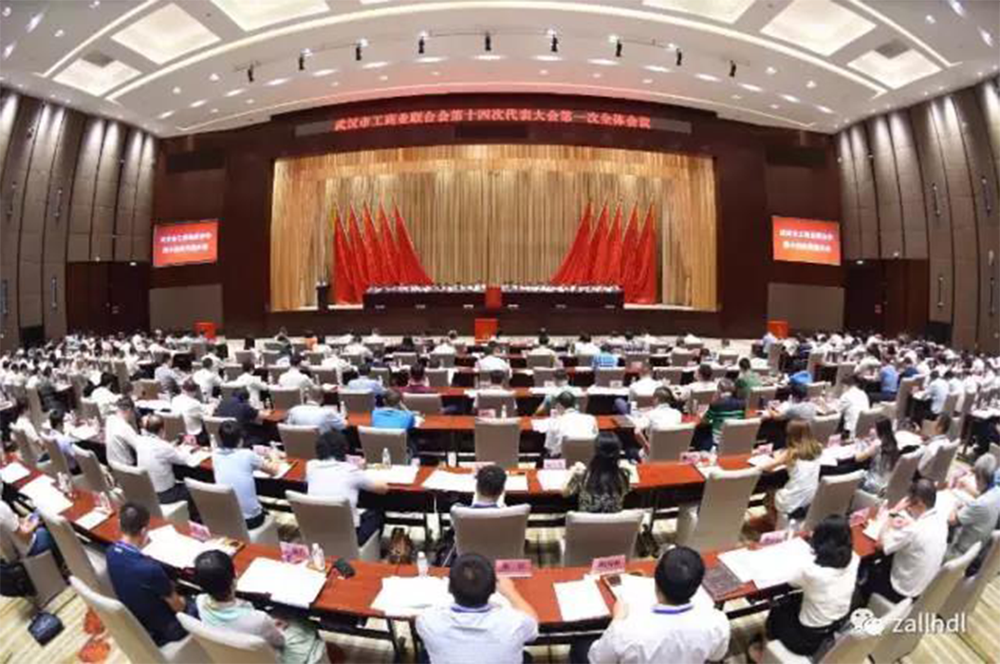

发布：2017-8-16
综合《长江日报》报道 8月8日，武汉市工商业联合会（简称市工商联）第十四次代表大会召开，经大会选举，卓尔控股有限公司董事长阎志当选为新一届市工商联（总商会）主席（会长）。 市工商联主席一职由民营企业家担任，这在1952年成立的武汉市工商联65年历史上尚属首次。

另有20位非公经济人士当选为市工商联兼职副主席，15位非公经济人士当选为市总商会兼职副会长，57人当选为市工商联新一届执行委员会常务委员。数据表明，新一届市工商联（总商会）领导班子兼职成员所掌管的企业，“新民营经济”企业占比较高，36家企业中，“四新”企业30家，占比约83.3%。
据介绍，这些非公经济人士的当选，是一个非常大的突破。市工商联相关人士指出，这是武汉贯彻落实全市新民营经济发展大会精神的重要举措，体现了新一届市委对民营经济发展的高度重视，对民营企业家作为市场主体的高度尊重和期待，希望他们发挥引领、示范作用带动武汉民营经济大发展。这也是武汉助推新民营经济发展的一项标志性事件。
据悉，目前在全国副省级城市中，仅有广州、厦门、宁波、深圳、南京5市市工商联主席由民营企业家担任。此前各地选拔担任工商联主席的企业家，一般年富力强、文化素质比较高，从事的行业多以实体经济为主，且参政议政能力较强。
在当选大会上，阎志首先感谢市委市政府给予他和全市民营企业经营者的信任与厚望。他表示，武汉民营经济、民营企业正在迎来史无前例的黄金发展期，新一届武汉市工商联将团结广大民营企业，倍加珍惜当前难得的发展机遇和全国一流的政策、政务、市场、法治环境，持续深入地做好新民营经济的发动、引领、培育工作，助力新民营经济在武汉加快建设国家中心城市中扮演更重要的角色。
阎志说，市工商联将积极参与承办中国（武汉）新民营经济发展高峰论坛，积极参与组建中国（武汉）新民营经济研究院，使武汉成为全国新民营经济重要策源地和发展高地；致力于推进“名品壮大”工程，遴选100家企业给予重点扶持，培育更多企业进入全国民营企业发展前列。发起设立总规模500亿元的武汉新民营经济投资基金（简称“新民投”），助力武汉新民营经济又好又快地发展。全力推动“聚商育商工程”，设立10亿元的中小企业互助基金，为小微民营企业贷款提供过桥资金，积极联系、争取各大金融机构对武汉市中小民营企业提供授信1000亿元，切实解决融资难问题。 他还呼吁与会企业家及全市民营企业，分外珍惜大力发展新民营经济的时代机遇，成为武汉打造新民营经济聚集地的主力军，以一流的发展业绩成为新民营经济的优秀代表；成为长江新城（新区）建设、高效高新产业发展战略等城市核心发展战略和“双百工程”的重要参与者；成为优秀社会公民，发扬企业家精神，认真履行社会责任，积极参与公益事业。坚信武汉市广大民营企业家一定会聚焦创业创新创富，共同书写新民营经济的辉煌篇章，为加快建设现代化、国际化、生态化大武汉作出更卓越的贡献。